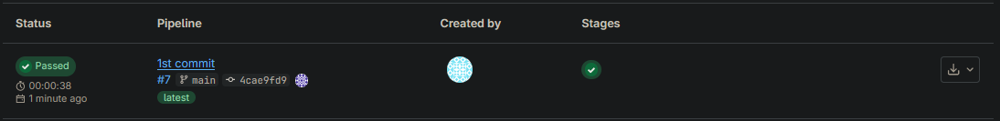
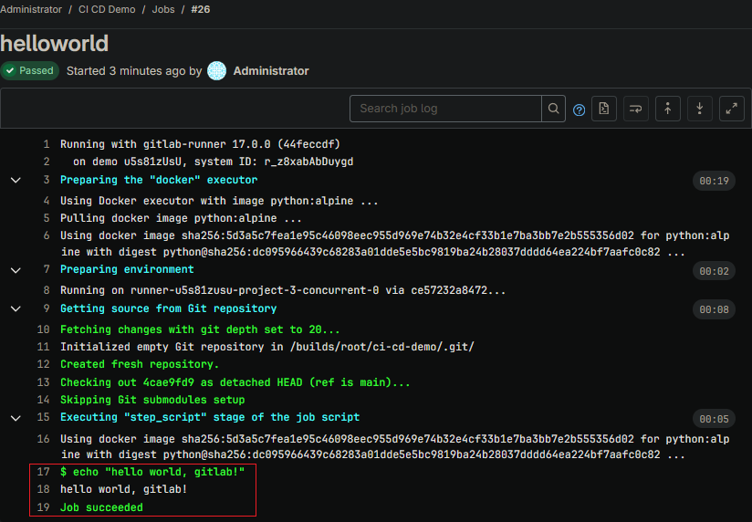
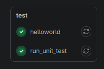
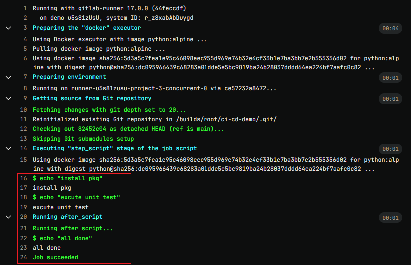
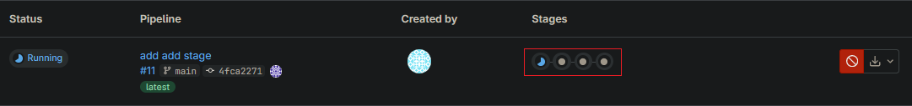
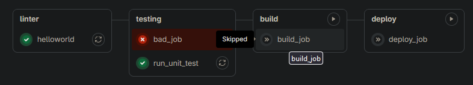
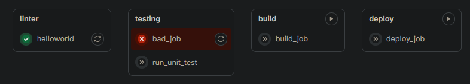
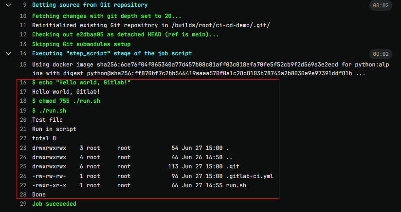
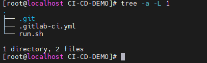
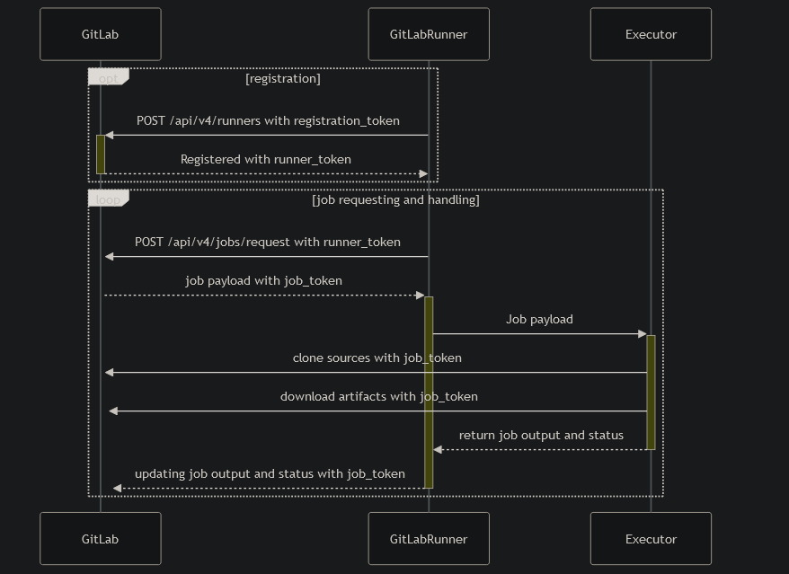

[Gitlab] Gitlab_Basic
Contents
這篇文章會記錄使用 Gilab CI/CD 的基礎使用
Ref
建立 .gitlab-ci.yml
在 Giblab 中使用 gitlab CI/CD, 都是透過建立 .gitlab-ci.yml 這個 file 來執行
每一個 repo 都可以建立, 在每一個 repo 的 commit 之後, gitlab 會自動去偵測是否有 .gitlab-ci.yml 這個檔案, 如果有就會自動執行裡面的內容
|
|
在 gitlab pipeline 或 jobs 中可以看到自動執行的效果


可以看到會顯示要執行的指令, 並產生出結果, 最後出現 success
建立多個 Job
要先增第二個 job 很簡單, 只需要往下在新增即可
|
|
從 pipeline 那邊可以看到兩個 Job 執行, 那這邊就只查看 2nd Job run_unit_test


可以看到 2nd 的 job 執行順序確實為 echo "install pkg" -> echo "excute unit test" -> echo "all done"
Job stage / Dependencies
job 並不是依序處理, 是併行進行, 成功失敗並沒有相依性
透過 stage 可以進行順序編排, 會從 stages 的順序去執行 job, 並且當前一個 stage 有任意的 failed 的時候, 後續就不會繼續執行
每一個 stage 可以包含多個 job, 在同一個 stage 裡面的 job 也是會同時並行
寫法就是在 job 裡面新增一個 stage parameter
|
|

從圖片上可以看到有 4 個 stage 並且會依序執行

可以看到當前一個 stage 裡面有 job 失敗後, 後方所有的 stage 都會被 skipped
剛剛有說到在同一個 stage 裡面的 job 會同時並行, 但如果是 job 之前有相依性可以透過 needs 這個 parameter 來做 dependencies
|
|

可以看到剛剛是一個 stage 裡面兩個 job 都會執行, 這邊是這個 stage 裡面只有執行 bad_job, 失敗之後同一個 stage 內的其他 job 和後續 stage 的內容皆不執行
Excute file
也可以透過執行外部檔案, 來將需要執行的命令或內容存放在執行檔中
|
|
run.sh
|
|


Specify branch
透過添加 only: - main 可以指定只有在指定 branch 進行更新的時候才會重新跑 CI/CD, 那也有 except 可以做到排除指定 branch 的動作
|
|

ENV Variable
在 Gitlab 中有預設定 ENV Variable
Predefined CI/CD variables reference
也可以在 Setting => CI/CD => Variables 這邊設定額外的自定義 variable
在 CI/CD 的過程中可以設定 variable 來控制環境變數, 一般有兩種寫法 local variable 和 global variable, local variable 是定義在 job 裡面, 只有特定 job 使用, global variable 就是全部的 job 都能用
|
|
|
|
WorkFlow
透過 workflow 可以對 pipeline 進行控制, 通常可以和 gitlab 預設的 variable 來進行 rule 的設定
第一條規則 (if: $CI_COMMIT_BRANCH == "main")：
if: 指定了一個 rule, 這裡使用了 $CI_COMMIT_BRANCH 環境變數來判斷當前的 pull branch 是否為 main
when: always: 當條件滿足(即當前分支為 main 時), pipeline 就會執行
第一條規則 (if: $CI_PIPELINE_SOURCE == "merge_request_event")：
if: 這個 rule 使用了 $CI_PIPELINE_SOURCE 環境變數, 它用來判斷 Pipeline 的來源是否為 merge_request_event. 表示當前的 Pipeline 是由合併請求事件觸發的。
when: always: 如果 Pipeline 的來源是 merge_request_event，則 pipeline 就會執行。
第二條規則 (when: never)：
when: never: 當前 pipeline 的 default 行為是從不執行, 表示除非前面的條件規則匹配, 否則 pipeline 不會執行。
|
|
Runner/Excutor
這邊來說說 Gitlab / Gitlab runner / Gitlab 之間的關係
Gitlab：產生任務
Runner：接收任務
Excutor：實際執行
就是說 Gitlab 會透過 .gitlab-ci.yml 來產生 pipeline(job), 並藉由 runner 接收到這個 job 之後, 指派給 excutor 來執行
Gitlab runner excutor 有以下幾種類別
| executor類型 | Description |
|---|---|
| Shell executor | Runner 直接在自己的 Local 環境執行 CI Job |
| Parallels executor | Runner 使用 Parallels 建立乾淨的 VM, 透過 SSH 登入該 VM 執行 CI Job. 需在主機上安裝 Parallels, 適用於 MacOS |
| VirtualBox executor | Runner 使用 VirtualBox 建立乾淨的 VM, 透過 SSH 登入該 VM 執行 CI Job. 需在主機上安裝 VirtualBox, 適用於 Linux 和 Windows |
| Docker executor | Runner 使用 Docker 建立乾淨的 Container 並執行 CI Job |
| Docker Machine executor | 類似 Docker Executor, 但可 auto-scaling |
| Kubernetes executor | Runner 使用 Kubernetes 叢集來運行 jobs. 透過 K8s API 控制 K8s Cluster 資源, 自動建立乾淨的 Pod 執行 CI Job |
| SSH executor | Runner 透過 SSH 連接到遠端主機執行 CI Job, 需提供 SSH 連線的帳號密碼或 SSH Key |
| Custom executor | 自定義 Executor. 若上述 Executors 無法滿足需求, 使用者可自行撰寫 Custom Executor |
runner-excution-flow
至於 gitlab 和 runner 和 excutor 是怎麼 registry, 溝通分配 job 的, 偷一下官網的圖XD

- 註冊階段：
-
POST /api/v4/runners with registration_token：
Runner 使用註冊令牌(registration_token)向 GitLab 註冊
-
Registered with runner_token：
Runner 註冊成功後, GitLab 會回傳一個 Runner 令牌(runner_token)給 Runner
- 作業請求和處理階段：
-
POST /api/v4/jobs/request with runner_token：
Runner 使用 Runner 令牌(runner_token)向 GitLab 請求作業（job）
-
Job payload with job_token：
GitLab 回應包含作業資訊和作業令牌(job_token)的作業載荷給 Runner
-
Clone sources with job_token：
Runner 使用作業令牌（job_token）clone sources
-
Download artifacts with job_token：
Runner 使用作業令牌（job_token）下載相關的工件（artifacts）
-
Return job output and status：
Runner 完成作業後, return 作業的輸出和狀態
-
Updating job output and status with job_token：
使用作業令牌(job_token)更新作業的輸出和狀態至 GitLab